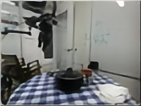
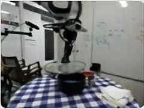
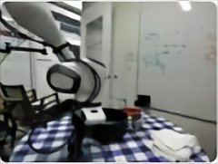
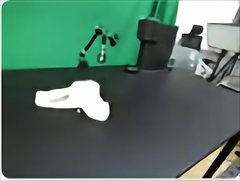
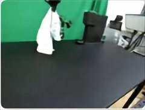
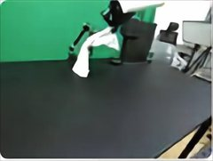
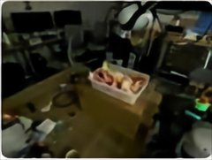
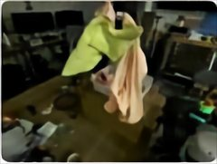
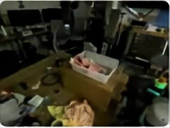

Video 1
Video 2
Video 3









0.0 s
introduces grasp, transfer, place
new objects & scene: reuses all three
throw ≠ place: new transformation
library size · 40 HD-EPIC clips
Qwen3.5-4B · oracle-history SFT
reference classes
46
model library
22
< half
across all 3 video orders
from streaming video
to reusable skills